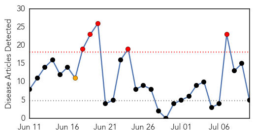
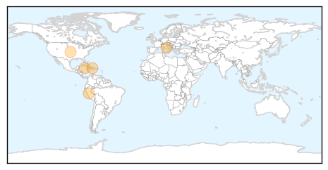
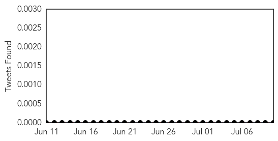

Chikungunya
30-Day Web Trend
5 alerts, 1 warnings

30-Day Twitter Trend
0 alerts, 0 warnings

Article Locations
Article Confidences

Top Articles:
- 0.999
- Understanding chikungunya and how to protect yourself
- 0.998
- Researcher says precautions should be taken to avoid a chikungunya outbreak in the US
- 0.974
- Second case of chikungunya confirmed in Central Texas
- 0.952
- Concerns grow about mosquito-carried virus
- 0.944
- Chikungunya epidemic threatens French Americas
Top Tweets:
-
No tweets found for Jul 10, 2014
Pertussis
30-Day Web Trend
7 alerts, 0 warnings

30-Day Twitter Trend
0 alerts, 0 warnings

Article Locations

Article Confidences

Top Articles:
-
No articles found for Jul 10, 2014
Top Tweets:
-
No tweets found for Jul 10, 2014